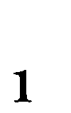
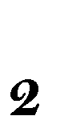
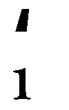
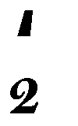
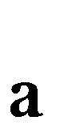
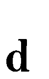

二分图最大匹配问题的经典解法是匈牙利算法，不过做题的时候，有些同学，包括我，使用的是一种贪心算法。这种贪心算法同样能在多项式时间内解决问题，倒不比匈牙利算法好，只是因人而异，写起来顺手。正如一个人初学骑车时没学习怎样单脚上车，那他可能再也不能学会（或者再也不会去学习）单脚上车了，慢慢的，我以后大概只会使用贪心法解二分匹配了。问题是，好像找不到这种算法的证明。我想自己证明，恰好找到一篇介绍贪心算法证明方法的文章（《如何证明贪心算法是最优 using exchange argument》），找到了思路，遂作证明如下。
问题描述：设G = (V, E)是一个无向图，若顶点集V可分为两个不相交的子集V, V之并，而边集E中每条边相关联的顶点恰好分属这两个不同的子集，则称G为二分图，记为G = (V, V, E)。设M是二分图G的子图，且M的边集{E}中任意两条边都不依附于同一个顶点，则称M是一个匹配。选择这样的子图中边数最大的图称为二分图的最大匹配问题。
贪心算法描述：
1. 如果E非空，转2，否则算法结束；
2. 找出V中度最小的顶点集V，同时得到图G=
(V, V,
E)；
3. 在V中找出度最小的“一个”顶点v，并在V找出与之关联的点v；
4. 将边<vv>添加到匹配中去，在原图中删除v, v
及相应的边，转1。
证明：
令贪心解为A。由于贪心解对边的选取顺序有规定，所以对于一个给定的最优解（最优解本身不包含边的选取顺序，如匈牙利算法，匹配包含的边一直交替变换），不妨让它尽量按照和A相匹配的顺序添加边。下面证明，贪心解是最优解（下面过程所使用记号的意义同上述算法描述）。
假设A不是最优解，而最优解O是和A最接近的最优解，即O是（调整顺序后的）最优解中和A相同边数最多的，并设O与A前K步选择相同，第K + 1次不同，即（1）O没有选择V中的顶点， （2）O选择了V中的顶点，但没有选择V中度最小的顶点。先用反证法否定（1）。现在依次可得出以下几个结论：
1. V中的点不出现在O中，这是条件假设；
2. V中的点都在O中，否则，O还可以添加至少一条边，与O是最优解矛盾；
3. 根据1, 2，可设：A在第K+1步选择了边<vv>，O在第K+1步选择了边
<vv>，其中，v∈ V，v∈ V-
V，v∈ V；
4. 与v相关联的其他顶点必在O中，否则，设v是其中不在O中的顶点，则
在O中用边<vv>和<vv>替换边<vv>，得到一个新解，
该解边数比O的边数多，与O是最优解矛盾；
5. 设v是与v相关联的顶点，又设v是O中与之关联的顶点。那么，将O中
的边<vv>和<vv>替换成边<vv>和<vv>，
也然是最优解，但该最优解比O更接近A，与假设矛盾！
现在否定了（1），对于（2），可将其放在子图G中作类似讨论，同样予以否定。
证毕.
虽然说“证明”了这个贪心算法，心里的惶恐还是挥之不去，因为自己对这个证明也不是很自信，发布在博客上，还请有心人帮忙检查证明是否正确。这篇博客要写几个数学符号，为此，本打算趁机学习TeX，再配合一些支持TeX的js脚本来显示数学公式，可惜，拿着那份“112分钟学会LaTeX2”的小册子，跑不通样例，打击了学习兴趣，这也就是为什么这篇博客的排版会这么惨淡。最近还要读好些书，做好些事情，展眼就要开学读研究生，先这样吧……